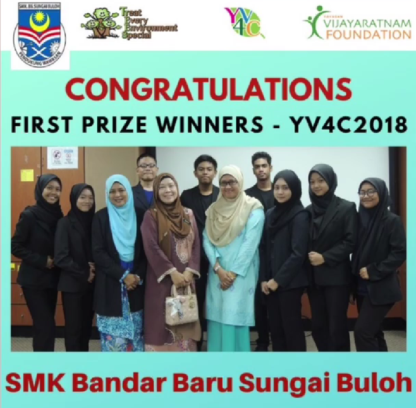

In my last year of high school, my friends and I participated in this competition which it is a TrEES "Young Voices for Conservation" empowers secondary school students to become leaders, engaging and mobilising their school communities to protect the environment. Treat Every Environment Special (TrEES) is an environmental organisation on a mission to educate, empower and connect the next generation of change makers. Under their programme “Young Voices for Conservation” (YV4C), they empower youth to pursue environmental change in areas they are passionate about and create positive change. Their vision is to create a world where youth become the instruments of change to help build an environmentally sustainable society. YV4C provides a framework for youth to be a part of the change taking place in the environmental ecosystem through applied learning and practical training programmes. Whether it be via leadership workshops, mentorship programmes, field trips, community events, competitions or discussions, they equip their youth with the knowledge and skills, thereby creating pathways for them to make a positive and sustainable impact on our environment.